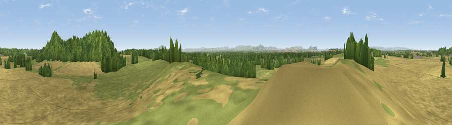

Viewpoint near Bomere Heath
#16801 in England · top 59% of its area beats it · near Bomere Heath · access?Where it is
The exact computed spot (SJ 48025 20475). Click the marker for map links.
Public access: no public right of way or access land is recorded at this exact spot — it may be on private land. Computed from Natural England's CRoW access layer and OpenStreetMap rights of way — not the legal definitive map. Always verify locally.
The view, rendered

A 360° render of this exact spot computed from the terrain model, tree cover and land cover — summer colours, afternoon light, calibrated against photographs of famous viewpoints. Real trees, hedges and buildings will differ in detail.
The panorama
Grey silhouette: terrain skyline in each direction (720 bearings, Earth curvature and refraction included). Dashed green: skyline with trees (+15 m) and buildings (+8 m) as obstacles. Blue strip: how far the ground is visible on each bearing.
Where the view opens
Wedge length = distance to the farthest visible ground on that bearing (vegetation-aware). Rings at 10, 25 and 50 km.
What fills the view
50% cropland · 34% grassland · 15% woodland · 2% built-up
Angular shares of the visible panorama (visual magnitude), not map area. Landscape diversity 0.46 (0–1 Shannon).
Key numbers
More beautiful places nearby
The staircase of upgrades: each row has a higher view potential than everything closer. Driving times are estimates from straight-line distance, calibrated against real road routing — check an actual route before setting out.
| Place | Direction | Drive | Score |
|---|---|---|---|
| Viewpoint near Preston Gubbals | ENE · 1 km | ~2 min | 68.1 |
| Pim Hill | NE · 1 km | ~3 min | 72.5 |
| Grinshill | NE · 5 km | ~11 min | 75.2 |
| Viewpoint near Marchamley | ENE · 13 km | ~24 min | 77.5 |
| Viewpoint near Plealey | SSW · 16 km | ~29 min | 78.0 |
| Earl's Hill | SSW · 17 km | ~30 min | 82.2 |
| Viewpoint near Halfway House | WSW · 19 km | ~32 min | 83.3 |
| Viewpoint near Little Wenlock | SE · 19 km | ~33 min | 86.6 |
52.77934, -2.77197 · source: screening · position refined by local search. Computed location — check access rights before visiting.